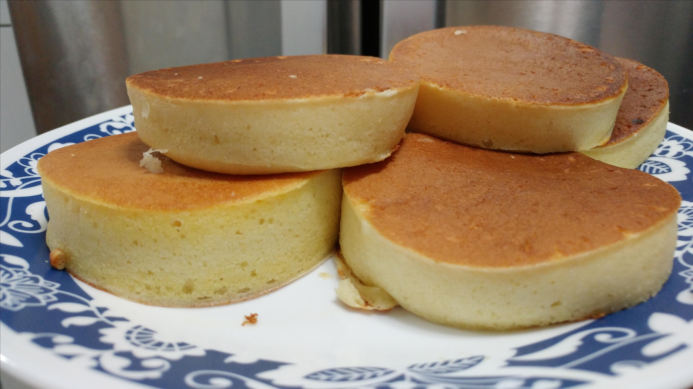

Fluffy Japanese Pancakes

A Japanese soufflé pancake is a pancake made using soufflé techniques. Egg
whites are whipped up with sugar into a glossy thick meringue then mixed
with a batter made with the yolks. Soufflé pancakes are incredibly popular
in Japan. Soufflé pancakes are fluffy, jiggly, sweet, soft, and so, so
delicious.
Ingredients
- 2 eggs, separated
- 1½ cups all-purpose flour
- ¼ cup white sugar
- 2 teaspoons baking powder
- ½ teaspoon baking soda
- 1¼ cups buttermilk
- ¼ cup melted butter
- ½ teaspoon vanilla extract
Steps
-
Beat egg whites in a glass, metal, or ceramic bowl until stiff peaks
form.
-
Butter enough 3 1/2-inch ring molds to fill your frying pan. Place molds
in the pan over low heat. Cover.
- Mix flour, sugar, baking powder, and baking soda in a bowl.
-
Combine buttermilk, egg yolks, butter, and vanilla extract in a separate
bowl. Add the flour mixture and stir until batter is fairly smooth.
-
Fold egg whites into the batter until combined. Small bits of egg whites
still showing is ok.
-
Pour about 1/2 cup of batter into each mold and cover the pan. Cook
until bubbles start forming at the top, about 5 minutes. Flip pancakes
in their molds and cook until set, 3 to 4 minutes more.
Go back to main page CLICK ME